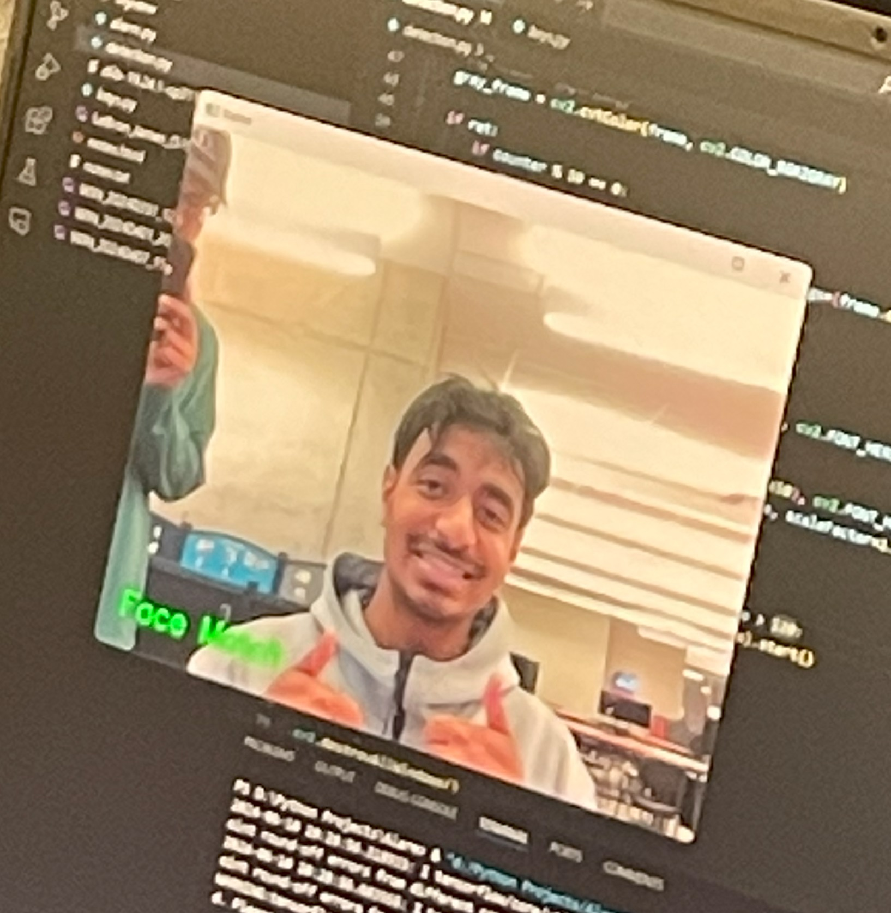

This project is a comprehensive machine learning pipeline designed to predict housing prices based on various features. The task is a regression problem, aiming to predict the ‘median_house_value’ in a given dataset. The Python libraries used in this project include pandas for data manipulation, numpy for numerical operations, matplotlib and seaborn for data visualization, and scikit-learn for machine learning tasks.
The pipeline begins with data loading and cleaning, where missing values are identified and removed. The data is then split into training and testing sets. Exploratory Data Analysis (EDA) is performed through histogram generation, correlation heatmaps, and scatter plots. Feature engineering is applied to handle categorical variables and skewness in certain features, and new features are created to enhance the model’s predictive power. Two models, Linear Regression and Random Forest Regressor, are trained on the standardized features. The performance of these models is evaluated using the R-squared score. The Random Forest model undergoes further optimization through Grid Search to find the best hyperparameters.
This project has been instrumental in my career as a software engineer. It has allowed me to apply and enhance my skills in Python programming, data manipulation, data visualization, and machine learning. It has also provided me with practical experience in handling real-world datasets, performing EDA, engineering features, and optimizing machine learning models. This project has not only reinforced my understanding of the end-to-end machine learning pipeline but also highlighted the importance of each step in achieving the best possible model performance. These skills and experiences are invaluable in the field of software engineering, particularly in roles related to data science and machine learning.
This project is a deep learning pipeline designed to classify handwritten digits using the MNIST dataset. The task is a multi-class classification problem, aiming to predict the digit (0-9) represented by each 28x28 pixel image in the dataset. The Python libraries used in this project include torchvision for data loading and transformations, torch for neural network and optimization operations, and matplotlib for data visualization.
The pipeline begins with data loading, where the MNIST dataset is downloaded and transformed into tensors. The data is then split into training and testing sets. A DataLoader is created for each set to handle batching, shuffling, and parallel processing. A Convolutional Neural Network (CNN) is defined with two convolutional layers, dropout, and two fully connected layers. The model is trained on a GPU if available, otherwise on a CPU. The optimizer used is Adam with a learning rate of 0.01, and the loss function is CrossEntropyLoss. The training function trains the model for a specified number of epochs, and the test function evaluates the model’s performance on the test set. The model’s performance is evaluated using the average loss and accuracy.
This project has played a pivotal role in my journey as a software engineer. It has served as a platform for honing my Python programming skills, deep learning techniques, and data visualization abilities. It has offered me hands-on experience in managing real-world datasets, architecting and training neural networks, and fine-tuning deep learning models. The project has not only solidified my grasp of the comprehensive deep learning pipeline but also underscored the significance of each phase in optimizing model performance. The competencies and experiences I’ve gained through this project are of immense value in the realm of software engineering, especially in positions that intersect with data science and machine learning.

This project involves the creation of a Python-based security alarm system designed to enhance home security following a break-in incident at a family friend’s home. The system leverages several Python libraries and APIs, including Twilio for sending text alerts, OpenCV for face detection, and DeepFace (which uses TensorFlow) for face verification.
The alarm system operates by monitoring the camera frame and triggering an alert when someone remains in the frame for more than two minutes. The alert is a text message sent to a predefined phone number via the Twilio API. To ensure privacy, all Twilio authentication codes are stored in a separate file that is imported into the main script. The system uses OpenCV’s face cascade classifier algorithm to recognize faces, specifically using my face as a reference. If a face that is not recognized is detected in the camera view for more than two minutes, a text alert is sent. The DeepFace library is used for face verification, comparing the reference image of my face to the camera input to perform facial detection.
This project has been a significant contribution to my software engineering career. It has allowed me to apply and enhance my skills in Python programming, API usage, and machine learning. It has also provided me with practical experience in designing and implementing a real-world application that addresses a specific need - in this case, home security. The project has not only reinforced my understanding of various Python libraries and APIs but also highlighted the importance of privacy and security considerations in software development. These skills and experiences are invaluable in the field of software engineering, particularly in roles related to data science, machine learning, and application development.
This project involves the creation of a Baggage Bot, an automated package delivery system designed to streamline the loading and unloading process at airports. The goal is to enhance productivity and efficiency. The bot operates in two modes - infinite delivery or a set number of packages, allowing flexibility based on user needs. It uses ultrasonic sensors for collision avoidance and a color sensor to determine the path to follow based on the color of stickers associated with each package.
The Baggage Bot’s functionality is governed by several key functions. The Menu function allows users to specify the number of packages to be delivered per trip. It uses the robot’s buttons to facilitate user interaction, offering options to unload a specific number of packages or an entire plane’s worth. The bot’s path is monitored by an ultrasonic sensor that checks for obstructions before each movement. If an obstruction is detected, the bot halts and signals that the path is blocked. If the obstruction persists for over 30 seconds, the bot executes the goHome function to return to its original location. If the obstruction is removed within 30 seconds, the bot awaits user input to resume its task. The bot also uses a color sensor to read the sticker color on each package, which determines the path it should follow.
This project was the reason I became interested in software. From the late nights grinding to fix the code, to a great presentation and demonstration of the Baggage Bot, I fell in love with all aspects of the software development process. It has allowed me to apply and enhance my skills in robotics, sensor integration, and user interaction design. It has also provided me with practical experience in designing and implementing a real-world application that addresses a specific need - in this case, improving efficiency in airport operations. The project has not only reinforced my understanding of robotics and sensor technology but also highlighted the importance of user-centric design and safety considerations in robotics. These skills and experiences are invaluable in the field of software engineering, particularly in roles related to robotics, automation, and user interface design.